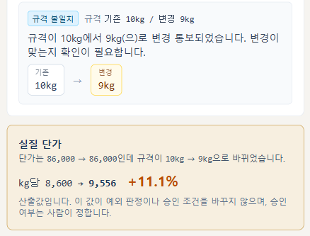

2026 스타트업 영그라운드 MVP 개발 해커톤 · 컴포지
ComfoziAI 구매 증빙 인박스
가격 인상 공문을 정리하고, 확인이 필요한 건만 골라 근거와 함께 보여줍니다.
합칠지 승인할지는 사람이 정합니다.
팀 화이팅구리 (1인팀) · 조현찬
https://hwaiting-guri.vercel.app · 로그인 없이 바로 사용
2026-08-16
목차
1
팀의 차별점
우리가 무엇을 다르게 만들었는가
2
핵심 흐름과
차별화 화면
담당자가 쓰는 순서 · 차별화 네 가지
3
요건 구현 결과
필수 7개와 추가 1개, 무엇으로 확인했는가
4
목표와
자체 평가
막힌 것, 해결한 것, 못 한 것
발표 뒤에 질의응답용 부록이 이어집니다 — 직접 눌러 보실 순서 · 확인한 근거와 남긴 기록.
1팀의 차별점 — 요구된 것 위에 무엇을 더했는가
필수 7개와 선택 1개는 전부 충족했습니다.
그건 뒤에 표로 정리했고, 이 장에는 요구되지 않았는데 한 것만 적었습니다.
① 만든 결과로 명세를 고쳤습니다
실행 출력과 근거 조항을 붙여 문의했고,
창업팀이 전체 팀에 정정 공지를 냈습니다.
문서를 읽고 만드는 데서 멈추지 않았습니다
② 계산을 대신합니다
명세가 “kg당 약 11% 실질 인상”이라 적어 둔 그 계산을
담당자 대신 화면이 합니다.
계산할 수 없으면 숫자를 만들지 않습니다
③ 감점 없는 것을 했습니다
같은 파일을 다시 올려도 덮어쓰지 않고 쌓습니다.
창업팀 회신 원문이 “구현하지 않았다고 감점하지 않습니다”입니다.
1회차 검수가 살아 있고, 2회차는 중복으로 잡힙니다
④ 선택 요건을 했습니다
공문 PDF에서 표를 읽습니다.
샘플 4종 품목 14 / 14, 빠뜨린 것 0 · 잘못 읽은 것 0.
읽은 뒤에도 사람이 확인하고 넣습니다
2담당자는 이렇게 씁니다
가맹점 10~99개 외식 프랜차이즈 본사의 구매 담당자
· 로그인 없이 주소만으로 씁니다. 파일이 없어도 예시 데이터로 바로 확인됩니다
지금
- 공문이 메일·팩스로 제각각
- 엑셀에 하나씩 옮겨 적기
- 같은 공문인지 눈으로 비교
- 규격 바뀐 건 지나치기 쉬움
저희 화면
- 올리면 자동으로 정리
- 확인할 것만 위로
- 왜 걸렸는지 원본 값과 함께
- 승인한 것만 넘어감
4건
사람이 봐야 하는 건 · 그냥 넣으면 값이 틀어진다
+11.1%
단가표엔 0%로 보이던 실질 인상
차별화 ① 명세가 적어 둔 계산을 화면이 합니다
창업팀 규칙 명세 4-3
“단가는 86,000원 → 86,000원으로 그대로인데 규격이 10kg → 9kg으로 줄었습니다.
kg당 단가로는 약 11% 실질 인상입니다.”
계산할 수 있으면 계산합니다
| 상자 | 10kg → 9kg |
| 단가 | 86,000 → 86,000 |
| kg당 | 8,600 → 9,556 |
담당자가 계산기를 두드리지 않습니다

배포본 화면 · DOC-019
계산할 수 없으면 숫자를 만들지 않습니다. DOC-020은 기준이 kg에서 단으로 바뀌어,
1단이 몇 kg인지는 공급사만 압니다. 화면은 그 사실을 적고 확인을 요청합니다.
계산해서 보여주는 값일 뿐이며, 예외 판정과 승인 조건을 바꾸지 않습니다. 자동 환산·자동 승인은 하지 않습니다.
차별화 ② 같은 공문이 두 번 와도 감점 없는 항목
재발송 공문은 흔합니다. 같은 인상분이 두 번 반영되면 그만큼 돈을 더 냅니다.
창업팀 회신 원문 “재업로드 시나리오는 채점 정답표에 없으며,
위 동작을 구현하지 않았다고 감점하지 않습니다.” → 그래서 구현했습니다.
덮어쓰지 않고 쌓습니다
같은 파일을 두 번 올리면
두 번째 20건이 전부 중복 의심
문서 번호가 같아도 내부에서는 다른 건으로 구분해,
검수하던 내용이 섞이지 않습니다.
PDF와 파일 사이도 비교
DOC-001 ← 가온푸드 공문 1행
DOC-009 ← 가온푸드 공문 2행
DOC-010 ← 가온푸드 공문 3행
그 공문이 실제로 20건의 원본이었습니다.

배포본 화면 · 같은 파일을 다시 올린 순간 (전체 20건 → 40건, 중복 의심 21건)
차별화 ③ 공문 PDF에서 표 읽기 추가 요건
그냥 뽑으면 칸이 사라집니다
그냥 뽑기 토마토살사S/O4kg/PKPK32,000
저희 결과 토마토살사S/O │ 4kg/PK │ PK │ 32,000
글자마다 나오는 위치 정보로
줄과 칸을 되살렸습니다.
샘플 공문 4종
14 / 14
품목 전건 읽음
빠뜨린 것 0 · 잘못 읽은 것 0
다품목 6 · 가격 누락 4 · 가온푸드 3 · 바다원 1
읽었다고 바로 넣지 않습니다.
확인 후 고른 것만 같은 검사를 거칩니다.

배포본 화면 · 다품목 공문에서 6건을 읽은 결과
차별화 ④ 만든 결과로 명세를 고쳤습니다
1. 어긋남을 발견
명세 요약표와 규칙 설명이 서로 달랐습니다
2. 근거와 함께 문의
추측 대신 실행 출력 + 해당 조항을 붙여서
3. 전체 팀 공지로 정정
저희 화면은 이미 맞아 고칠 코드가 없었습니다
무엇이 어긋났는가 — DOC-020
| §4-1 규격 패턴 | 규격 불일치 |
| §4-2 단위 병기 | 단위 불일치 |
| §6-1 지침 | “두 개 이상이면 모두 표시” |
| §6-2 기대 결과표 | 단위 불일치 한 가지만 |
저희 실행 출력
DOC-016 -> missing_required
DOC-018 -> duplicate_suspected
DOC-019 -> spec_mismatch
DOC-020 -> spec_mismatch, unit_mismatch ← 2개
네 건 중 세 건은 기대 결과와 같았고, DOC-020만 달랐습니다.
창업팀 정정 공지 중
“한 참가팀이 실제 구현 출력과 근거 조항을 함께 보내주셔서 확인됐습니다.”
이 문의로 전체 참가팀의 판정 기준이 바뀌었습니다.
3요건 구현 결과
| 요건 | 결과 | 확인 방법 |
|---|
| ① 실행 가능한 산출물 | 완료 | 배포 URL · 소스 · README |
| ② 파일 · 수기 입력 | 완료 | CSV 업로드 + 화면 등록 |
| ③ 구조화와 원본 근거 | 완료 | 9개 필드 + 파일명·행 번호 |
| ④ 검수 인박스 | 완료 | 상태·예외별 필터 |
| ⑤ 누락·중복·불일치 탐지 | 완료 | 20건 전건 일치 |
| ⑥ 사람 검수와 변경 이력 | 완료 | 수정·승인·반려·재검토 |
| ⑦ JSON · CSV 내보내기 | 완료 | 승인분만 · UTF-8 |
| 추가 원본 문서(PDF) 입력 | 완료 | 공문 4종 누락 0건 |
예외처리와 안전장치
- 자동 승인·병합 없음
- 문제 남으면 메모 필수
- 승인 뒤 값을 고치면 승인이 취소됨
- 파일 오류에도 목록 유지
미리 박아둔 답이 아닙니다
문서 번호를 전부 바꿔도 판정이 같고,
행 순서를 뒤집으면 중복 기준이 따라 바뀝니다.
4목표와 자체 평가
초기 목표
꾸밈보다 판단 근거
필수를 먼저, 추가는 그 다음
→ 필수 7 + 추가 1 완료
막혔던 것
- PDF에서 표가 뭉개짐
→ 글자 위치로 칸 복원
- 검수하던 목록이 사라짐
→ 실패해도 목록 유지
- 승인이 한 번에 안 눌림
→ 원인 찾아 해결
자체 평가
된 것
20건 전건 일치 · 예외 근거 표시 · 공문 PDF 읽기
못 한 것
스캔 이미지 공문 · 사전 밖 품목 정확도 · 실사용자 테스트
안 되는 것은 README에 그대로 적었습니다.
증빙은 브라우저 밖으로 나가지 않습니다 — 밖으로 보낸 요청 0건.
2026 스타트업 영그라운드 MVP 개발 해커톤 · 컴포지
감사합니다
지금 바로 열어 보실 수 있습니다. 로그인이 없고,
파일이 없어도 예시 데이터로 전체 흐름을 확인하실 수 있습니다.
합칠지 승인할지는 사람이 정합니다.
https://hwaiting-guri.vercel.app
ComfoziAI 구매 증빙 인박스 · 팀 화이팅구리 (1인팀) · 조현찬
이어서 질의응답용 부록 — 직접 눌러 보실 순서 · 확인한 근거와 남긴 기록
부록 A · 직접 눌러 보실 순서
로그인이 없습니다. 주소만 열면 바로 쓸 수 있고, 파일이 없어도 예시 데이터로 확인하실 수 있습니다.
| # | 눌러 보실 것 | 확인되는 것 |
|---|
| 1 | 예시 데이터로 바로 보기 | 파일 없이 10건이 뜹니다. 예외 네 가지가 모두 들어 있습니다 |
| 2 | 제공 20건 파일 올리기 | 정답표와 같은 판정. 확인 대상 4건이 이유와 함께 표시됩니다 |
| 3 | 확인 필요한 항목 선택 | 왜 걸렸는지, 근거가 된 원본 값과 파일의 그 줄 원문 |
| 4 | 비어 있는 적용일 채우기 | 문제가 풀리고 상태가 바뀝니다. 변경 이력에 남습니다 |
| 5 | 승인 → 값을 다시 깨뜨리기 | 승인이 저절로 풀립니다. 잘못된 값이 나가지 않습니다 |
| 6 | 같은 파일 다시 올리기 | 덮어쓰지 않고 쌓이며 전부 중복 의심으로 잡힙니다 |
| 7 | PDF 공문 열기 | 표를 읽어 후보를 만듭니다. 확인 후 넣으면 파일과의 중복도 잡힙니다 |
| 8 | JSON · CSV 내려받기 | 승인분만 나갑니다. 어느 파일 몇 행에서 왔는지 함께 실립니다 |
부록 B · 확인한 근거와 남긴 기록
스스로 점검하는 장치
기대하는 결과를 미리 적어 두고 실제 실행 결과와 맞춰 보는 점검을 13항목 만들었습니다.
하나라도 어긋나면 실패로 끝납니다.
실행 결과 전문을 손대지 않고 그대로 문서로 남겼습니다
(검증결과_전체_2026-08-15.pdf).
받은 적 없는 데이터로도 시험했습니다.
직접 만든 24건에서 죽지 않고 전부 확인 필요로 떨어졌습니다 —
소수점 · 음수 · 날짜 3종 · 이모지 · BOM 없는 파일.
개발 중 스스로 찾아 고친 것
- 파일 읽기 실패 때 검수하던 목록이 사라지던 문제
- 검수 메모가 저장되지 않던 문제
- 승인 후 값을 고쳐도 승인이 유지되던 문제
모두 다시 점검하다 발견했고, 같은 일이 생기지 않도록 점검 항목에 넣었습니다.
과정 기록
태스크마다 실제 걸린 시간을 기록하고, 만든 자료를 워크에 함께 올렸습니다.
12일 동안(08.04~08.15)의 과정이 남아 있습니다.
https://hwaiting-guri.vercel.app
로그인 없이 주소만으로 전 기능 사용 가능